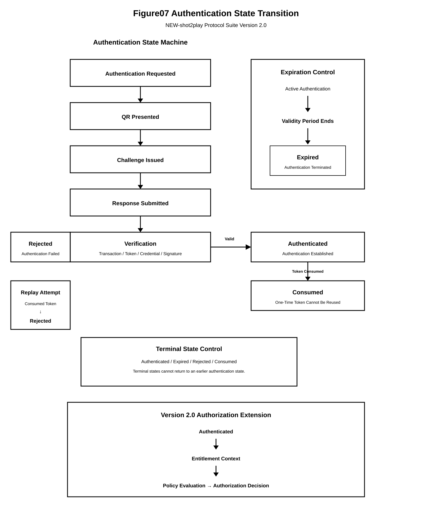
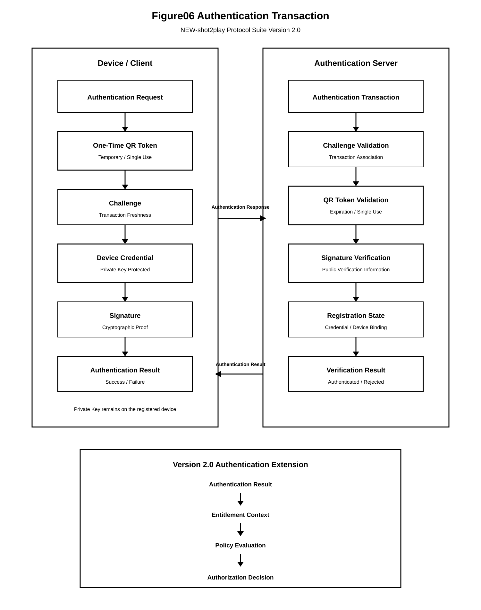

Chapter 04 — Authentication Protocol
This chapter defines the Authentication Protocol of the NEW-shot2play Protocol Suite Version 2.0.
The Authentication Protocol establishes authenticated identity evidence for a protocol transaction. It does not, by itself, establish an authorization decision or permission to execute a service action.
Authentication establishes identity evidence.
Authentication success SHALL NOT by itself constitute authorization.
4.1 Purpose and Scope
The purpose of the Authentication Protocol is to establish whether a presented authentication operation satisfies the applicable authentication requirements for an Identity Object and Credential Object.
The Authentication Protocol covers:
- authentication request construction;
- credential presentation;
- credential verification;
- identity association;
- authentication state evaluation;
- authentication result generation;
- authentication transaction traceability; and
- propagation of authenticated identity evidence to subsequent protocol layers.
The protocol does not define an entitlement as a consequence of authentication success unless an explicitly defined business event or entitlement rule separately creates such an entitlement.
4.2 Relationship to Version 1.0
Version 2.0 incorporates the Authentication Protocol defined by Version 1.0 as the normative authentication reference.
Version 1.0 remains the Baseline Specification (Normative Reference) and SHALL NOT be modified by Version 2.0.
Version 2.0 extends the protocol architecture above the Authentication Layer by defining Entitlement, Policy, and Authorization processing.
Accordingly, an implementation conforming to Version 2.0 MAY use the authentication mechanisms defined in Version 1.0 while applying the additional protocol-layer requirements defined by this specification.
4.3 Authentication Boundary
The Authentication Layer forms a protocol boundary between credential verification and the subsequent authorization-related layers.
Identity
+
Credential
+
Authentication Request
|
v
Authentication Processing
|
v
Authentication Result
|
v
Entitlement
|
v
Policy Evaluation
|
v
Authorization
|
v
Service
The Authentication Layer SHALL produce an Authentication Result that can be independently consumed by subsequent protocol layers.
The Authentication Layer SHALL NOT directly determine whether a requested service action is authorized unless the authorization decision is explicitly defined as part of a separate authorization operation.
4.4 Authentication Inputs
An authentication operation SHALL identify the inputs required to establish authentication according to the applicable authentication method and policy.
Representative inputs include:
- Identity Identifier or claimed identity;
- Credential Identifier;
- credential verification material;
- authentication challenge;
- authentication response;
- authentication transaction identifier;
- authentication timestamp; and
- applicable authentication policy.
An implementation MAY require additional inputs where required by the selected authentication method.
4.5 Authentication Request
An Authentication Request represents an operation requesting the establishment or verification of authenticated identity.
The request SHOULD contain:
- Authentication Request Identifier;
- Subject or Identity Identifier;
- Credential Reference;
- Authentication Method;
- Challenge or transaction nonce where applicable;
- Request Timestamp; and
- applicable protocol context.
The Authentication Request Identifier SHALL uniquely identify the authentication operation within the applicable protocol scope.
An Authentication Request SHALL NOT be reused as a different logical authentication transaction.
4.6 Authentication Transaction
An authentication operation SHALL be represented by an Authentication Transaction.
The Authentication Transaction provides traceability for the authentication operation and MAY be referenced by subsequent Entitlement, Policy, Authorization, and audit processing.
Representative transaction attributes include:
- Authentication Transaction Identifier;
- Identity Identifier;
- Credential Identifier;
- Authentication Method;
- Challenge Reference;
- Request Timestamp;
- Completion Timestamp;
- Authentication Result; and
- Failure Reason where applicable.
The Authentication Transaction SHALL remain distinguishable from the Identity Object, Credential Object, and Authentication Object.
4.7 Credential Verification
The Authentication Layer SHALL verify the presented credential according to the applicable authentication method.
Credential verification MAY include:
- cryptographic signature verification;
- challenge-response verification;
- credential status verification;
- credential expiration verification;
- credential revocation verification;
- trust-anchor verification; or
- other protocol-defined verification procedures.
A credential SHALL NOT be accepted solely because the credential identifier is syntactically valid.
Where credential validity cannot be established, the authentication operation SHALL fail unless the applicable protocol explicitly defines another safe outcome.
4.8 Identity Association
A successfully verified credential SHALL be associated with the Identity Object to which the credential is validly bound.
The association SHALL be established according to the applicable credential registration and trust rules.
An authentication operation MUST NOT treat an arbitrary identifier contained in a credential as sufficient proof of identity association.
Where the credential-to-identity relationship cannot be established, the authentication operation SHALL NOT produce a successful Authentication Result.
4.9 Authentication State
Authentication processing SHALL maintain an explicit state for the authentication operation.
Representative states include:
- Initiated;
- Challenge Issued;
- Credential Presented;
- Verification Processing;
- Authenticated;
- Rejected; and
- Expired or Cancelled.
The actual state set MAY be extended by an implementation where such extension does not conflict with the normative state transitions defined by the protocol.
A terminal authentication failure SHALL NOT be interpreted as an authenticated state.
4.10 Authentication State Transition

The authentication state SHALL transition according to the outcome of the applicable authentication processing.
A representative successful transition is:
Initiated
|
v
Challenge Issued
|
v
Credential Presented
|
v
Verification
|
v
Authenticated
A verification failure SHALL transition to a failure state and SHALL NOT transition to Authenticated.
An expired, cancelled, revoked, or otherwise invalid authentication operation SHALL NOT be converted into a successful authentication state by subsequent processing unless a new authentication operation is explicitly initiated.
4.11 Authentication Transaction Figure

Figure 06 illustrates the transaction-level structure of the Authentication Protocol.
The transaction representation provides the protocol boundary between the authentication request, credential verification, authentication result, and subsequent protocol processing.
4.12 Authentication Result
A successful authentication operation SHALL produce an Authentication Result.
The Authentication Result represents the protocol-level result of identity verification and SHALL be distinguishable from an Authorization Decision.
Representative Authentication Result attributes include:
- Authentication Result Identifier;
- Authentication Transaction Identifier;
- Identity Identifier;
- Authentication Method;
- Authentication Assurance Information where applicable;
- Authentication Timestamp;
- Authentication Status; and
- Failure or rejection information where applicable.
A successful Authentication Result SHALL indicate only that the applicable authentication requirements have been satisfied.
It SHALL NOT indicate that the subject is entitled to access a particular service or resource.
4.13 Authentication Success and Failure
The Authentication Protocol SHALL produce a determinate result for each completed authentication operation.
The result SHALL be one of the protocol-defined successful, rejected, expired, cancelled, or otherwise failed outcomes.
A successful result requires all mandatory authentication conditions to be satisfied.
A failure condition SHALL prevent the Authentication Result from being represented as successfully authenticated.
Authentication failure MAY result from:
- invalid credentials;
- invalid cryptographic proof;
- credential expiration;
- credential revocation;
- challenge mismatch;
- challenge expiration;
- replay detection;
- identity association failure;
- authentication policy failure; or
- other protocol-defined verification failures.
4.14 Replay Resistance and Freshness
An authentication operation SHALL provide sufficient freshness to prevent an authentication response from being accepted as a substitute for a previously completed authentication operation.
Where the authentication method uses a challenge, nonce, timestamp, transaction identifier, or equivalent freshness mechanism, the verification process SHALL validate the applicable freshness condition.
A challenge or authentication transaction identifier that has already been consumed SHALL NOT be accepted for a new authentication operation where reuse could permit replay.
An implementation MAY use additional replay detection mechanisms provided that such mechanisms do not weaken the authentication requirements.
4.15 Authentication Context
An Authentication Result MAY contain or reference authentication context required by subsequent protocol layers.
Representative context includes:
- Authentication Method;
- Authentication Assurance Level;
- Authentication Timestamp;
- Authentication Transaction Identifier;
- Credential Identifier;
- Device or execution context where applicable; and
- security-related verification state.
Authentication Context SHALL remain distinguishable from Authorization Context.
A subsequent protocol layer MAY use Authentication Context as an input to policy evaluation without treating such context as an authorization decision.
4.16 Authentication-to-Entitlement Boundary
The Authentication Layer SHALL provide authenticated identity evidence to the Entitlement Layer through an explicit protocol boundary.
Authentication Result
|
v
Authenticated Identity
|
v
Entitlement Evaluation
Authentication success SHALL NOT automatically create an Entitlement unless an independent entitlement rule defines the authentication event as an entitlement-acquisition event.
Where an Entitlement is created as a consequence of an authentication event, the creation SHALL be represented as a separate entitlement operation and SHALL retain the applicable transaction or event reference.
4.17 Authentication-to-Policy Boundary
The Policy Layer MAY use authenticated identity and Authentication Context as inputs to Policy Evaluation.
The Authentication Layer SHALL NOT modify Policy state merely because authentication succeeds.
The separation is represented as:
Authentication Result
|
v
Authentication Context
|
v
Policy Evaluation
Policy Evaluation SHALL independently determine whether the authenticated subject satisfies the conditions of the applicable Policy Object.
4.18 Authentication-to-Authorization Boundary
The Authorization Layer MAY use the Authentication Result as one input to an Authorization Evaluation.
Authentication SHALL NOT be treated as a substitute for entitlement validation or policy evaluation.
The authorization processing model is therefore:
Authenticated Identity
+
Entitlement State
+
Policy
+
Authorization Context
|
v
Authorization Evaluation
|
v
Authorization Decision
An implementation SHALL preserve the logical distinction between Authentication Result and Authorization Decision.
4.19 Authentication Security Requirements
An implementation conforming to this specification SHALL protect the integrity and authenticity of Authentication Results.
At minimum, the implementation SHALL:
- protect authentication transaction identifiers against unintended reuse;
- protect challenges and equivalent freshness values against unauthorized modification;
- prevent invalid credentials from producing successful authentication results;
- prevent expired or revoked credentials from being accepted where such status is applicable;
- prevent authentication failures from being represented as successful authentication states; and
- preserve the association between an Authentication Result and its Authentication Transaction.
Security controls MAY be implemented using cryptographic, transactional, stateful, or equivalent mechanisms appropriate to the selected authentication method.
4.20 Authentication Audit and Traceability
Authentication operations SHALL provide sufficient information to establish traceability between the authentication request, verification operation, and resulting authentication state.
Where audit logging is implemented, the log SHOULD contain:
- Authentication Transaction Identifier;
- Identity Identifier;
- authentication outcome;
- authentication timestamp;
- authentication method;
- relevant failure reason; and
- references to associated protocol transactions.
Audit information SHALL NOT be interpreted as authorization state.
Sensitive credential material SHALL NOT be recorded in audit records unless explicitly required by a controlled security procedure and protected accordingly.
4.21 Conformance Requirements
An implementation claiming conformance to the Authentication Protocol SHALL:
- implement the authentication processing required by the applicable authentication method;
- maintain an explicit authentication transaction;
- produce a determinate Authentication Result;
- reject invalid or unverifiable authentication evidence;
- enforce applicable freshness and replay protections;
- maintain the distinction between authentication and authorization;
- preserve the identity association established by authentication;
- provide the Authentication Result to subsequent protocol layers through an explicit interface; and
- not represent authentication success as an Authorization Decision.
4.22 Summary
The Authentication Protocol establishes authenticated identity evidence within the NEW-shot2play Protocol Suite Version 2.0.
The protocol defines a distinct Authentication Transaction, Authentication State, and Authentication Result.
Authentication success establishes identity verification but does not independently establish entitlement, policy satisfaction, or authorization.
The resulting separation establishes the following protocol boundary:
Identity | Credential | Authentication | Authentication Result | Entitlement | Policy Evaluation | Authorization | Service
This separation permits the same authenticated identity to be evaluated against different Entitlements, Policies, services, and authorization contexts without modifying the authentication operation itself.
The Authentication Layer therefore functions as the identity verification boundary of the Version 2.0 protocol architecture, while authorization remains an independent downstream decision process.